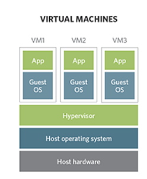
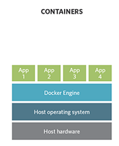
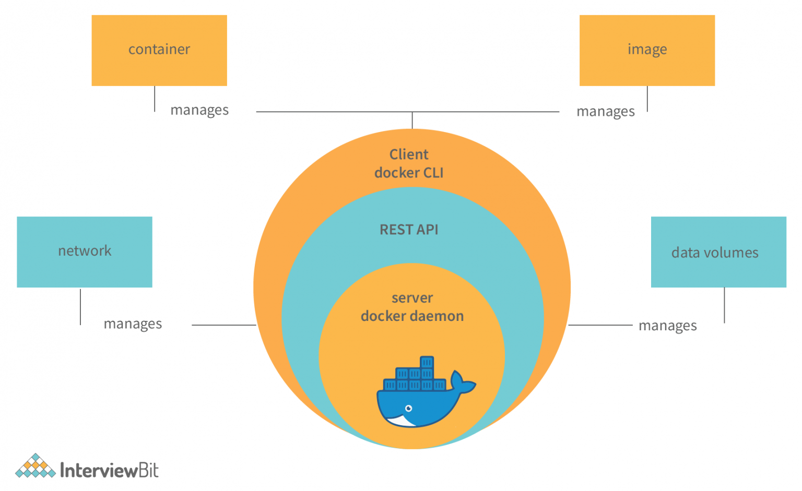
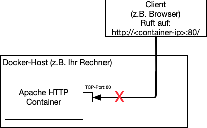
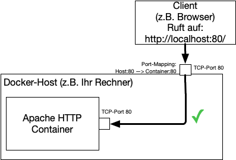
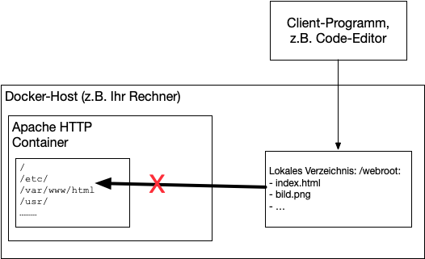
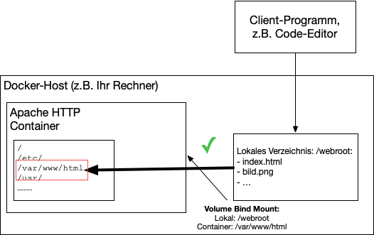

{% extends "../_base_template.html" %}
{% block title %}Lektion 3 - Grundlagen Container{% endblock %}

{% block sections %}
<section data-markdown>
<textarea data-template>
# <i class="fas fa-graduation-cap"></i> M347 - Grundlagen Container

## Heutiges Ziel

- Sie wissen, was 'Linux Container' sind
- Sie kennen die grundlegende Architektur von Containern
- Sie kennen den Unterschied zu virtuellen Maschinen
- Sie können selber bestehende Images vom Docker Hub laden und in Betrieb nehmen

</textarea>
</section>

<section>
<section data-markdown>
<textarea data-template>
# <i class="fas fa-graduation-cap"></i> Virtualisierung

Die grossen Themen, welche die IT in den letzten Jahren beschäftigen, heissen:

* **Virtualisierung**
* **Automation**

Das grosse Ziel dieser Bestrebungen ist vor allem:

* komplexe Abläufe und Konzepte zu abstrahieren
* Ressourcen besser nutzen (bsp: 1 physischer Server, viele virtuelle Server)
* Management vereinfachen (bsp: Setup von Betriebssystemen automatisieren)
* Infrastruktur skalierbar machen
* Abläufe wiederholbar und nachvollziehbar machen

Vor allem im Bereich **Virtualisierung** hat sich in den letzten Jahren sehr vieles getan:
Die meisten Dienste im Internet laufen heute *virtualisiert*, also nicht mehr als physische Server, sondern als Stück
Software, welches auf "Virtueller Hardware" läuft. So können physische Server viel besser genutzt werden, das Management
wird vereinfacht, und Abläufe lassen sich automatisieren.

</textarea>
</section>

<section data-markdown>
<textarea data-template>
# <i class="fas fa-graduation-cap"></i> Virtualisierung

<i class="far fa-hand-point-right"></i> **Frage:** Doch was bedeutet eigentlich **Virtualisierung**?

<div style="display: flex;gap:10;" class="fragment">
<figure>
  
  <figcaption>Quelle: https://www.nine.ch/hs-fs/hubfs/Blog/Blog%20Posts/Pictures/Virtual%20machines%20versus%20containers.png?width=640&name=Virtual%20machines%20versus%20containers.png<figcaption>
</figure>

<div style="flex-grow:1;">

Unter der klassischen **Virtualisierung** versteht man das **Abstrahieren von Hardware**:
Hardware wird **emuliert**, das heisst, es wird richtige Hardware **vorgegaukelt**.

Die darin laufende Software merkt davon nichts: **Die Software meint, sie laufe auf richtiger Hardware**.

Ein so genannter **Hypervisor** (Virtualisierungsschicht) sorgt für die Kommunikation zwischen des auf der Virtualisierung laufenden Betriebssystems und der realen Hardware.

Jedes virtuell laufende Betriebssystem bekommt somit virtuelles RAM, Disk-Space, CPUs, Grafikkarten etc...
</div>

</div>

<div class="fragment">

Diese Architektur ermöglicht das bessere Auslasten der physischen Hardware. Die darin laufenden VMs sind aber relativ **schwergewichtig**:
Sie "blockieren" viele Ressourcen, die sie ev. gar nicht benötigen (RAM, CPUs, ...).

</div>


</textarea>
</section>

<section data-markdown>
<textarea data-template>
# <i class="fas fa-graduation-cap"></i> Containerisierung

Hier kommt "**Containerisierung**" ins Spiel: anstatt eine vollwertige Hardware zu emulieren, verpacken wir unsere
Applikationen in kleine "Container":

* Die Applikation wird normal auf dem Betriebssystem ausgeführt 
* Das Betriebssystem limitiert jedoch den Zugriff auf Ressourcen, welche die Applikation nicht zugreifen darf:
  * Die Applikation sieht nur einen Teil des Filesystems
  * Die Applikation kann nur auf einen abgeschotteten Bereich des Speichers zugreifen
  * Die Applikation erhält nur eingeschänkte CPU-Ressourcen
  * Die Applikation erhält nur Zugriff auf ausgewählte Netzwerk-Ressourcen.
* Die Applikation läuft jedoch **auf derselben physischen CPU, mit demselben Betriebssystem-Kernel** wie der Host.

Diese Technologie **ist nur auf bestimmten Betriebssystemen möglich**: die Containerisierung ist also eine Technologie, welche zwingend
an eine Betriebssystem-Technologie gebunden ist. **Die bekannteste Container-Lösung besteht für Linux-Betriebssysteme**.

**Architektur**




</textarea>
</section>

<section data-markdown>
<textarea data-template>
# <i class="fas fa-graduation-cap"></i> Virtuelle Maschinen vs Container

Virtualisierung und Container sind 2 grundverschiedene Technologien, welche beide ihre
Vor- und Nachteile aufweisen:

## Virtuelle Maschinen

| Vorteile | Nachteile |
|----------|------------|
| komplett isoliert (Sicherheit) | Entwicklungszeit (Aufbau) |
| Client- und Host-Betriebssystem unabhängig | Grösse (Ressourcen: Disk, RAM, CPU) |
| Unterschiedliche CPU-Architekturen möglich | Ressourcenverbrauch auch wenn ungenutzt |
| für viele Betriebssysteme erhältlich | Guest-OS muss auch gemanagt werden  |
| Interaktive Entwicklung | nicht (einfach) portierbar |

## Container

| Vorteile | Nachteile |
|----------|------------|
| Portabel (zwischen Container-Runtimes) | Läuft nur auf 1 Betriebssystem |
| Leichtgewichtig (effektiver Ressourcenverbrauch | eingeschränkte Sicherheit (shared resources) |
| Einfach zu warten |  |
| Einfach zu entwickeln | |
| Hochskalierbar, automatisierbar | |


</textarea>
</section>

<section data-markdown>
<textarea data-template>
# <i class="fas fa-graduation-cap"></i> Container-Architektur - Docker

**Docker** ist die bekannteste Applikation, um "Linux-Container" zu erstellen, verwalten und laufen zu lassen. 
Docker ist eine so genannte "**Container Runtime**". Docker führt folgende Architektur und Konzepte ein:

<div style="display: flex;gap:10px;">
<div class="links" style="flex-shrink: 0;">
<figure>

<figcaption>Architektur<br>Quelle: docker.com</figcaption>
</figure>

<figure>

<figcaption>Komponenten<br>Quelle: https://www.interviewbit.com/blog/docker-architecture/</figcaption>
</figure>
</div>

<div class="rechts smaller">

* ein **Docker Host** ist die (physische) Linux-Maschine, auf der Images und Container existieren/laufen
* ein **Image** ist ein "Behälter", der Ressourcen (Dateien + Config) beinhaltet. Es definiert ebenfalls Metadaten wie Kapazitäten, Abhängigkeiten zu anderen Images, und weitere Komponenten.
  Ein Image ist die Grundlage für daraus erzeugte Container.
* ein **Container** ist eine Art "Mini-Umgebung", in welcher Ihre Applikationen laufen: Sie basieren auf einem Image, und können nur
  auf die definierten Ressourcen zugreifen (z.B. Netzwerk, Filesystem, CPUs), der "Rest der Welt", also andere Ressourcen auf dem Host, sind abgeschottet.
* ein **Client** bedient den Docker-Host mittels einer **API**.
* Die **Registry** ist eine zentrale Stelle / ein Repository, wo fertig erstellte Images gelagert werden können.

Als Ressourcen können konfiguriert werden:

* **Networks**: Docker-Container können nur auf ihnen zugewiesene Netzwerke zugreifen. Docker-Networks sind abgeschottete Netzwerk-Bereiche,
  innerhalb derer sich Container austauschen können.
* **Volumes**: Disk-Ressourcen, also persistenter Speicher. Dies können sein:
  * **Docker-Managed Data Volumes**: Von Docker verwaltete Volumes. Das kann lokaler Speicher, aber auch Cloud-Speicher sein.
  * **Volume Container** sind Container, welche Speicher für andere Container zur Verfügung stellen, z.B. um gemeinsam auf denselben Speicher zuzugreifen
  * **Directory Mounts**: Host-Verzeichnisse, welche an Container angehängt werden können. Vor allem sinnvoll für z.B. lokale Entwicklungsumgebungen.
</div>
</div>
</textarea>
</section>

<section data-markdown>
<textarea data-template>
# <i class="fas fa-graduation-cap"></i> Container-Architektur - Port Mapping

**Container** laufen in einer abgeschotteten Umgebung: Das betrifft auch das Netzwerk: ein Netzwerk-Dienst (TCP-Port), welcher vom
Container erstellt wird, ist "von aussen", also von unserem Host, nicht erreichbar:



Es muss explizit ein **Netzwerk-Port-Mapping** konfiguriert werden: Netzwerk-Anfragen können nicht direkt an den Container, sondern müssen
an den Host gestellt werden, welcher dann eine (zuvor konfigurierte) Port-Weiterleitung an den Container vornimmt:

<div style="display: flex; gap: 10px">
  
  <div>

Dies passiert beim Erstellen des Containers mittels des `-p` Parameters (siehe nächste Folien).
  </div>
</div>
</textarea>
</section>

<section data-markdown>
<textarea data-template>
# <i class="fas fa-graduation-cap"></i> Container-Architektur - Volume Binds

**Container** laufen mit einem eigenen Filesystem: Sie haben grundsätzlich keinen Zugriff auf externe
Dateien, welche z.B. auf einem Host liegen:



Wir können aber ein externes **Volume** über einen Container-Pfad **binden** (oder auch "mounting" genannt): der Container "sieht" dann den Inhalt des 
angehängten Volumes:

<div style="display: flex; gap: 10px">
  
  <div>

So können Host-Verzeichnisse an den Container "überreicht" werden, und beide Systeme (Host, Container) haben Zugriff
auf dieselben Dateien.

Hier im Beispiel wird ein Host-Verzeichnis "`/webroot`" im Container unter "`/var/www/html`" angehängt.

Dies passiert beim Erstellen des Containers mittels des `-v` Parameters.
  </div>
</div>

  </div>
</div>
</textarea>
</section>
</section>


<!-- ------------------------------------------------------ -->
<section>
<section data-markdown>
<textarea data-template>
# <i class="fas fa-tools"></i> Docker - erste Schritte

<i class="fas fa-exclamation-triangle"></i> _Voraussetzung_: Auf Ihrem Rechner ist Docker
installiert, und der Docker-Dienst läuft! <i class="fas fa-exclamation-triangle"></i> 

Wir steigen direkt mit kleinen Beispielen ein: Ziel ist:

* dass Sie eigene **Container** anhand vorgefertigter **Images** erstellen / ausführen können
* dass Sie vorhandene Images auf dem **Docker Hub** finden und anwenden können
* dass Sie die grundlegenden **Docker-Kommandos** des **CLI** kennen

**Wir starten: 'Hello, World!'**

Öffnen Sie ein <i class="fas fa-terminal"></i> **Terminal** und geben Sie folgendes Kommando ein:

```sh
docker run -d -p 80:80 docker/getting-started
```

Nach etwas Installation sollten Sie in einem Browser <http://localhost:80/> aufrufen können.

**Was passiert hier?**

```sh
docker run  [...] docker/getting-started   startet einen neuen Container vom Image 'docker/getting-started'.
                                     Gibt es das Image nicht lokal, wird es auf hub.docker.com gesucht
                                     und heruntergeladen. Der Container startet das voreingestellte
                                     Kommando, in diesem Fall wird ein Webserver gestartet.
      -d                             Started den Container im Hintergrund, sodass Ihre Shell wieder frei ist.
      -p 80:80                       Netzwerk-Port-Mapping: ein Host-TCP-Port (links) wird auf einen Container-Port (rechts) gemappt:
                                     Alle Anfragen an Ihren Host-Port (localhost:80 in unserm Fall) werden an den Container-Port
                                     geleitet.
```

Auflisten der laufenden Container:

```
docker ps
```

Sie stoppen den Container wieder mit:

```sh
docker stop [container-name]
```
</textarea>
</section>

<section data-markdown>
<textarea data-template>
# <i class="fas fa-tools"></i> Docker - wichtige Kommandos

```sh
# Auflisten aller laufenden Container:
docker ps

# Auflisten ALLER Container, auch gestoppte:
docker ps -a

# Container stoppen:
docker stop [container-name]

# gestoppten Container starten:
docker start [container-name]

# neuen Container erstellen/starten
docker run [.... optionen ....] [image-name]
# bsp:
docker run -d --name mein-container -p 8000:80 docker/getting-started

# Container löschen:
docker rm [container-name]

# lokale IMAGES auflisten:
docker images

##### Grundsätzlich #####

# Hilfe

docker help [kommando]

# Hilfe zu Kommandos
docker help [kommando]

# oder:
https://docs.docker.com/engine/reference/commandline/cli/

### Weiterführende Kommandos ###

# Kommandos rund um Networking:
docker network ........

# Kommandos rund um Volumes:

docker volume .....
```
</textarea>
</section>
</section>

<section>
<section data-markdown>
<textarea data-template>
# <i class="fas fa-flask"></i> Aufgabe: Webseite aus M293 als Docker-Container

**Aufgabe:** 

* Sie erstellen einen Webserver-Container, welcher Ihr Webseiten-Projekt (Ihre statischen Seiten) vom Modul M293
  als Webseite unter http://localhost:8000/ ausliefert
* Sie verwenden dazu das Image `httpd` (Apache HTTP Server, <https://hub.docker.com/_/httpd/>)
* Sie erarbeiten sich das Wissen dazu selbständig.

## Was müssen Sie sich für Wissen aneignen?

* Grundsätzlich: wie erstellen Sie einen Container mit dem `httpd`-Image?<br>
  <i class="far fa-hand-point-right"></i> Infos dazu: <https://hub.docker.com/_/httpd/>

* Wie konfigurieren Sie ein **Port-Mapping**, damit Sie von Ihrem Host (localhost) TCP Port 8000 an den Container-Port 80 weiterleiten können?<br>
  <i class="far fa-hand-point-right"></i> Infos dazu: <https://docs.docker.com/engine/reference/commandline/run/#publish-or-expose-port--p---expose>

* Wie konfigurieren Sie ein **Volume Mapping**, sodass Ihr lokaler Folder mit der Web-Applikation dem Web-Server zur Verfügung gestellt werden kann?<br>
  <i class="far fa-hand-point-right"></i> Infos dazu: <https://docs.docker.com/engine/reference/commandline/run/#mount-volume--v---read-only>

**Ziel:**

beim Öffnen des Links <http://localhost:8000> sollte Ihr Webseiten-Projekt von M293 angezeigt werden.


</textarea>
</section>

<section data-markdown>
<textarea data-template>
# <i class="fas fa-flask"></i> Aufgabe: Webseite aus M293 als Docker-Container

**Gemeinsame Besprechung / Durchspielen**

* Bau / Holen des richtigen Images
* Überlegungen zu Volumes
* Port-Freigaben
* Erstellen des Containers

<!--
Lösung erarbeiten: docker run-Kommando

docker run --rm -v "$(pwd)":/usr/local/apache2/htdocs/ -p 8000:80 httpd
-->


</textarea>
</section>
</section>
{% endblock %}
